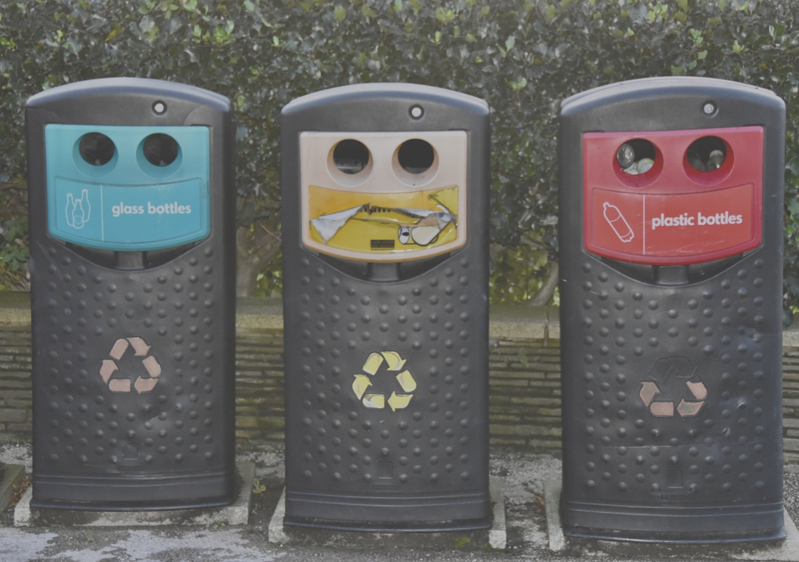

Our Projects
1. Urban Community Gardens
GFI’s Urban Community Gardens project transforms vacant urban lots into vibrant community gardens. These gardens serve as a source of fresh, organic produce for local residents while also providing a green space for relaxation and community events.
Goals:
- Increase access to fresh, healthy food in urban neighborhoods.
- Foster community engagement and collaboration.
- Promote sustainable gardening practices.
Impact:
- Established 15 community gardens across Cape Town, benefiting over 500 families.
- Provided educational workshops on urban agriculture to more than 2,000 participants.
- Reduced urban blight and created safe, green spaces in underserved areas.
Case Study: In the Woodstock district, GFI transformed an abandoned lot into a thriving community garden. The project not only provided fresh vegetables to local families but also became a hub for community events, bringing together neighbors who had never interacted before.
2. Green Schoolyards Initiative

The Green Schoolyards Initiative partners with local schools to convert their playgrounds and unused spaces into eco-friendly gardens and outdoor classrooms. This project integrates environmental education into the school curriculum, teaching students the importance of sustainability from a young age.
Goals:
- Educate students on environmental stewardship and sustainable practices.
- Create outdoor learning environments that enhance student engagement.
- Reduce the school’s carbon footprint by incorporating green spaces.
Impact:
- Collaborated with 10 schools, reaching over 3,000 students.
- Planted 500 trees and shrubs in schoolyards, improving air quality and biodiversity.
- Developed educational programs that are now a core part of the curriculum in participating schools.
Case Study: At the Mitchells Plain Primary School, GFI helped transform a barren playground into a lush garden with raised beds, composting areas, and an outdoor classroom. The garden is now used for science lessons, and the students actively participate in its upkeep.
3. Waste Reduction and Recycling Workshops
GFI’s Waste Reduction and Recycling Workshops educate urban communities on the importance of reducing waste, recycling, and composting. These workshops provide practical tips and tools to help residents minimize their environmental impact.
Goals:
- Increase awareness of waste reduction practices.
- Encourage recycling and composting in urban households.
- Reduce the amount of waste sent to landfills.
Impact:
- Hosted over 50 workshops, with more than 1,000 participants.
- Distributed 300 composting kits to families, helping them start home composting.
- Reduced waste by an estimated 20 tons across the communities involved in the program.
Case Study: In the Khayelitsha township, GFI’s workshops led to the formation of a community-led recycling initiative. Residents now collectively manage a recycling center that sorts and sells recyclable materials, generating income for the community.
4. Urban Reforestation Project

The Urban Reforestation Project focuses on planting trees in densely populated urban areas to improve air quality, reduce urban heat, and create more green spaces. This project also includes educational outreach to inform residents about the benefits of trees in urban environments.
Goals:
- Increase the tree canopy in urban areas.
- Improve air quality and reduce the urban heat island effect.
- Engage the community in tree planting and care.
Impact:
- Planted over 2,000 trees in Cape Town’s urban neighborhoods.
- Organized tree care workshops for 500 community members.
- Collaborated with local authorities to ensure long-term maintenance of the trees.
Case Study: In the Salt River neighborhood, GFI’s Urban Reforestation Project planted 500 trees along streets and in parks. This initiative not only beautified the area but also significantly reduced local temperatures during the summer months, creating a more comfortable environment for residents.
5. Sustainable Housing Workshops

GFI offers Sustainable Housing Workshops to teach urban residents how to make their homes more energy-efficient and environmentally friendly. The workshops cover topics such as renewable energy, water conservation, and eco-friendly building materials.
Goals:
- Promote sustainable living practices in urban households.
- Reduce energy and water consumption in cities.
- Increase awareness of renewable energy options.
Impact:
- Trained 800 homeowners and renters on sustainable housing practices.
- Assisted 100 households in installing solar panels or rainwater harvesting systems.
- Reduced energy consumption by an estimated 15% in participating homes.
Case Study: In the Southern Suburbs of Cape Town, GFI’s workshops helped residents retrofit their homes with energy-efficient appliances and solar water heaters. This not only lowered their utility bills but also reduced the community’s overall carbon footprint.